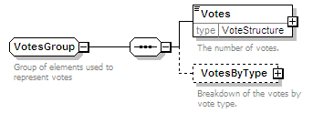
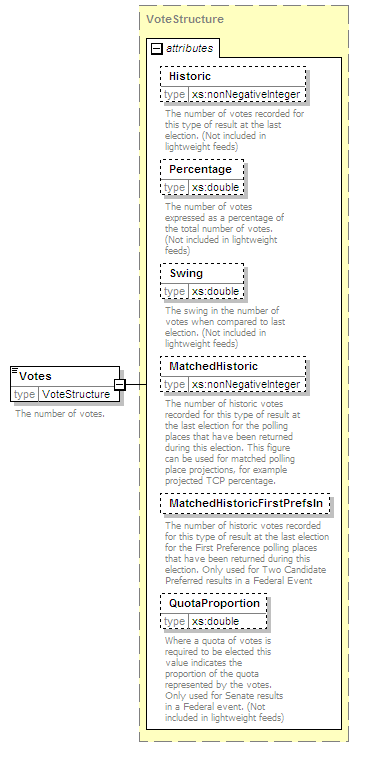
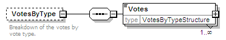
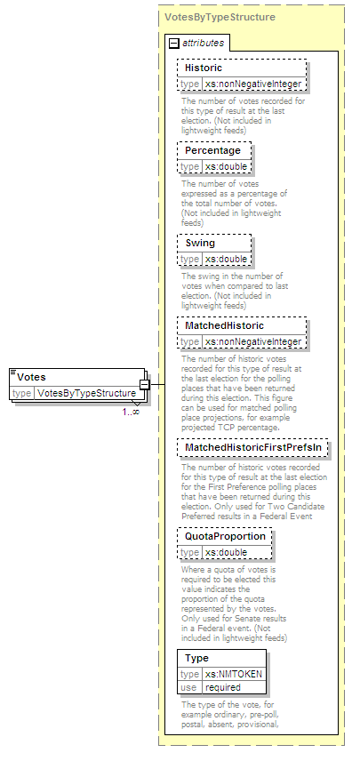

| diagram |  | ||
| namespace | http://www.aec.gov.au/xml/schema/mediafeed | ||
| children | Votes VotesByType | ||
| used by | |||
| annotation |
|
||
| source | <xs:group name="VotesGroup"> <xs:annotation> <xs:documentation>Group of elements used to represent votes</xs:documentation> </xs:annotation> <xs:sequence> <xs:element name="Votes" type="VoteStructure"> <xs:annotation> <xs:documentation>The number of votes. </xs:documentation> </xs:annotation> </xs:element> <xs:element name="VotesByType" minOccurs="0"> <xs:annotation> <xs:documentation>Breakdown of the votes by vote type. </xs:documentation> </xs:annotation> <xs:complexType> <xs:sequence> <xs:element name="Votes" type="VotesByTypeStructure" maxOccurs="unbounded"/> </xs:sequence> </xs:complexType> </xs:element> </xs:sequence> </xs:group> |
| diagram |  | ||||||||||||||||||||||||||||||||||||||||||||||||||||||
| namespace | http://www.aec.gov.au/xml/schema/mediafeed | ||||||||||||||||||||||||||||||||||||||||||||||||||||||
| type | VoteStructure | ||||||||||||||||||||||||||||||||||||||||||||||||||||||
| properties |
|
||||||||||||||||||||||||||||||||||||||||||||||||||||||
| attributes |
|
||||||||||||||||||||||||||||||||||||||||||||||||||||||
| annotation |
|
||||||||||||||||||||||||||||||||||||||||||||||||||||||
| source | <xs:element name="Votes" type="VoteStructure"> <xs:annotation> <xs:documentation>The number of votes. </xs:documentation> </xs:annotation> </xs:element> |
| diagram |  | ||||||||
| namespace | http://www.aec.gov.au/xml/schema/mediafeed | ||||||||
| properties |
|
||||||||
| children | Votes | ||||||||
| annotation |
|
||||||||
| source | <xs:element name="VotesByType" minOccurs="0"> <xs:annotation> <xs:documentation>Breakdown of the votes by vote type. </xs:documentation> </xs:annotation> <xs:complexType> <xs:sequence> <xs:element name="Votes" type="VotesByTypeStructure" maxOccurs="unbounded"/> </xs:sequence> </xs:complexType> </xs:element> |
| diagram |  | ||||||||||||||||||||||||||||||||||||||||||||||||||||||||||||||
| namespace | http://www.aec.gov.au/xml/schema/mediafeed | ||||||||||||||||||||||||||||||||||||||||||||||||||||||||||||||
| type | VotesByTypeStructure | ||||||||||||||||||||||||||||||||||||||||||||||||||||||||||||||
| properties |
|
||||||||||||||||||||||||||||||||||||||||||||||||||||||||||||||
| attributes |
|
||||||||||||||||||||||||||||||||||||||||||||||||||||||||||||||
| source | <xs:element name="Votes" type="VotesByTypeStructure" maxOccurs="unbounded"/> |